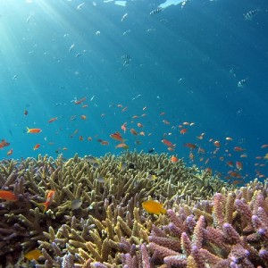
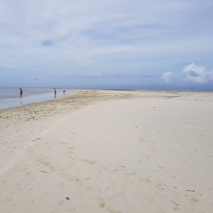
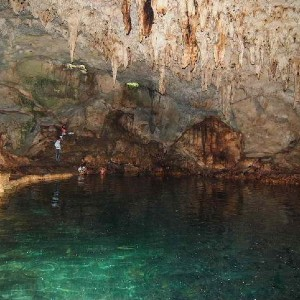
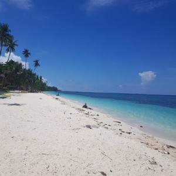

A Glimpse About Panglao
Panglao Island is one of the many islands in the Philippines. It is located in the south central
region
of the country. Panglao attracts tourists from all over the world because of its pristine white-sand
beaches, rich marine life and beautiful nature. It also attracts business-minded people of different
nationalities. Among the many businesses in Panglao are resorts which include five-star hotels,
restaurants offering different kinds of cuisines and dive shops.
For tourists, Panglao offers a lot of activities from diving, snorkeling or just sight-seeing.
Things to do in Panglao

SNORKELING IN BALICASAG ISLAND
If you are looking for an underwater experience, then head to Balicasag island for one of the
most
amazing
snorkeling experiences you’ll ever have. Being a fish sanctuary, you can see in Balicasag
different
kinds of
fish, up close and personal.

SUNBATHING ON VIRGIN ISLAND
Sunbathing at the Virgin Island is a unique experience. Here you can soak under the sun while
enjoying the beautiful sandbar. And if it gets too hot, you can take a dip in the surrounding
clear
blue water. Don’t forget to take your jump shot photo before leaving.

EXPLORING HINAGDANAN CAVE
If you are a fan of caves, then don’t skip Hinagdanan cave. It is not your ordinary cave because
inside you will find a pool of clear water where you can swim. There are also a couple of holes
that
let the sunlight inside, which give the cave some light.

RELAXING AT ALONA BEACH
Alona Beach is a white sand beach and the most popular beach on Panglao island. It features a
wide
range of restaurants and hotels which makes it a perfect place for those who are looking to
relax by
the ocean, and at the same time not getting bored.

+63 123 4468465